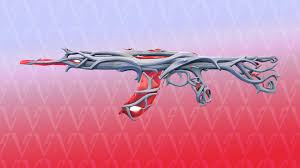
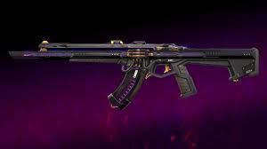
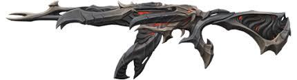

Valorant est un jeu vidéo de Riot Game, c'est un fps, 2 équipes de 5 joueurs s'affronte sur une map et ils doivent soit tuer tous les joueurs adverses ou planter et diffuser le spike (la bombe!)

C'est un skin ressemblant à un arbre, je le trouve très beau

C'est mon premier skin, je trouve le design de l'arme et l'animation trop belle

C'est un skin que j'ai acheté et adoré avec la vide, l'ambiance qu'il dégage et les sensations de l'arme quand on tire avec !